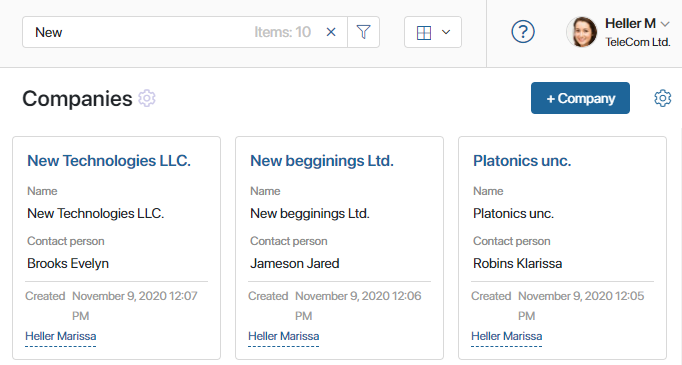
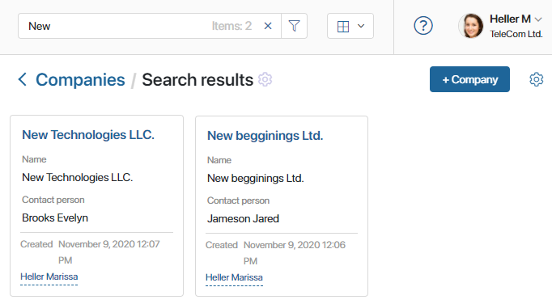
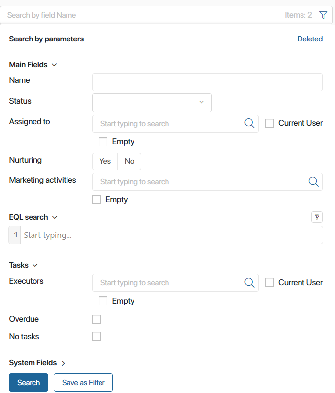
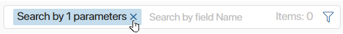
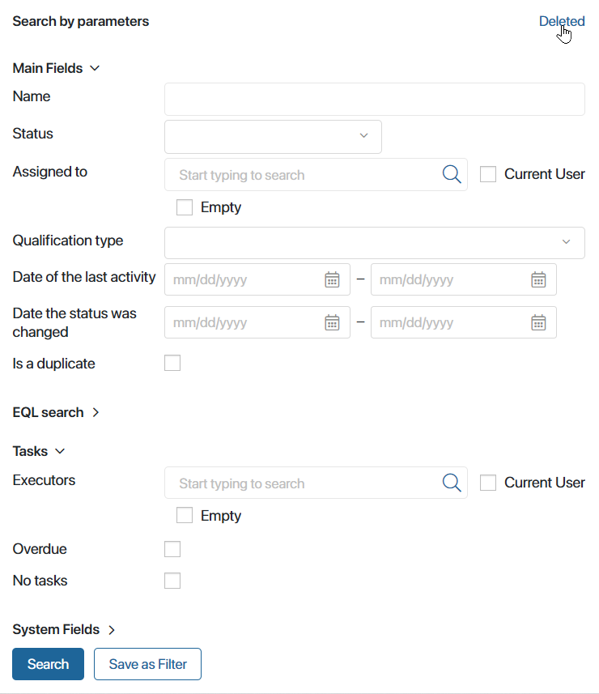
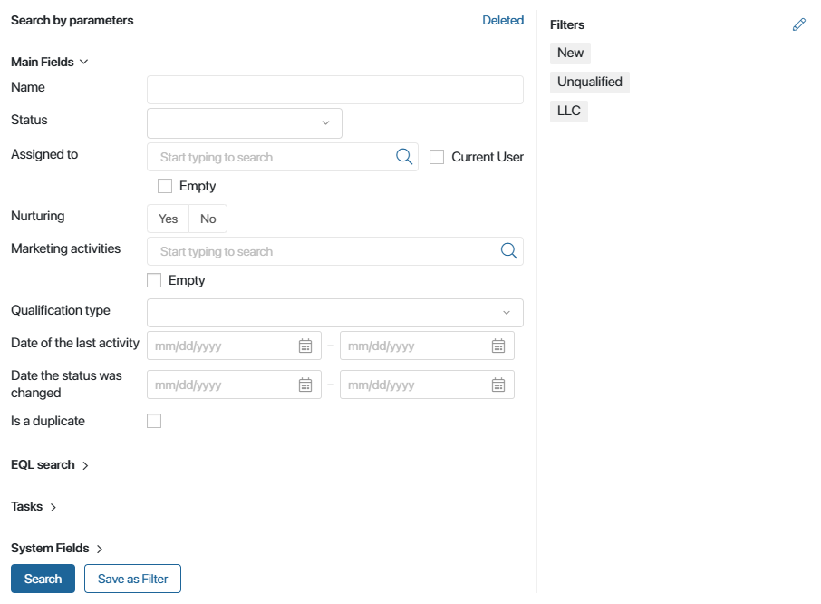
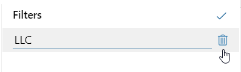
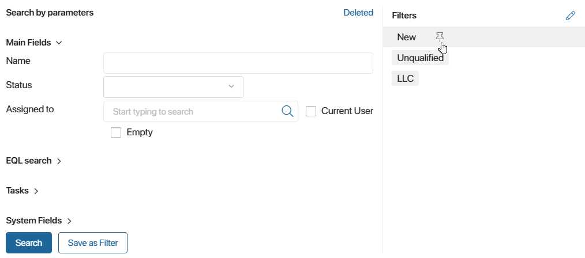
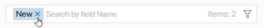

Search helps you find a particular entry across all items within an app. You can search in several ways:
- Specify the name of the item.
- Filter entries by system and custom properties, as well as by item-related tasks.
- Create a more complex query using EQL365 (BRIX Query Language). This way you can specify detailed search conditions, applying functions and special operations.
These methods can be combined. If you specify several parameters, you can save the query as a filter and use it in the future.
Search by name
To start searching, open the app page and type your query in the search bar at the top. You can enter the full name of an item or a part of it. The search is not case-sensitive.

Press Enter on your keyboard. You will see all app items that have the text you entered in their name.
In the search bar, you will see how many items are found in total. In the app settings, you can choose which way to show the number of matching items in the search bar. You can select an exact or approximate number, and disable the display to make the search result load faster.

To clear the search bar, click on the cross on the right side of it or press Esc on your keyboard.
Full-text search
A full-text search is performed in the same way as a search by name. For an app property to participate in a full-text search, the Full text search check box must be selected in the property settings.
Search by parameters
To narrow down the results, you can also search by specific parameters. You can get the most precise results by using several parameters at the same time.
In addition, you can use such a search when filling in fields on the forms of creating or editing an app item. For more information, see the Search by parameters on app item page article.
To search by parameters, on the app page, click the filter icon in the search bar.
In the opened form, you can search by app main and system fields, as well as by tasks associated with the item. In addition, you can create a query in EQL365: specify complex search conditions to get the most accurate results.

- Main fields. These are custom app properties that the Search and sort by field option was enabled for when configuring the app form. Please note that App type fields are displayed on the search form only for those users who have access to the app. In apps with configured statuses, you can use the Status field as a search parameter. It is possible to choose any status, including hidden final ones. When you use search by status, results are displayed on the page as a table.
- EQL search. Create a query in EQL365 (BRIX Query Language) and specify conditions for complex data selection. The query is formed taking into account the developed syntax.
To refer to properties, use their codes. Search conditions are specified using operations and functions. You can specify several criteria in one query using logical bindings. You can compose a query using the autocomplete option. The drop-down menu with available arguments is called by the Ctrl + Space key combination.
For example, you can find all the companies that have made orders for a certain amount and whose address includes New York. For more information refer to Search queries in EQL365.
- Tasks. Here you can search by tasks associated with the app items, that is, assigned in a business process or in the Associated tasks widget. Read more in the Search tasks article. You can specify the following parameters:
- Executors. Specify the user responsible for tasks associated with the app items you are searching for.
- Overdue. Search results will include app items that have overdue tasks associated with them.
- No tasks. Search results will include app items that have no tasks associated with them.
- System fields. These are fields that are the same for all apps. Here you can specify the following parameters:
- Author. The user who created the app item.
- Edited by. The user who last modified the item.
- Date created. The date of item creation. You can specify a time interval (from ... to ...). The beginning of a calendar day is considered 00:00:00 am, so you can find items created during one day, for example, January 1, 2023, by specifying a date interval in the following format: 01/01/2023 – 01/02/2023.
- Date modified. The date of item modification. You can specify a time interval (from ... to ...). It is possible to select a precise date or specify a period. The beginning of a calendar day is considered 00:00:00 am.
After filling in the fields, click the Search button.
To reset the options and see all available items again, click the cross in the search bar.

Features of search by app fields
Additional search options are available for fields of different types.
- App type fields. If the Multiple option is enabled in the property settings, you can select multiple values at once. Then the result will display all app items that have at least one of the values listed in the search in the specified field. For example, on the Company app page, you can specify multiple values for the Contacts field in the search. Then the result will display all the companies that have at least one contact that matches the specified ones.
- Users type fields. You can find a user by entering their name, email address, or login in the search bar. User names can be displayed with last name or last and second names. The display is configured within the company by the system administrator.
You can also use the parameter search by clicking the magnifying glass icon, e.g., search for a user by position in the organizational structure, group, etc.
In addition, the Current user option is available for the field, which substitutes your name in the selected field. For example, in this way, you can find deals for which you are responsible or contracts where you are the approver.
- The Empty option is available for fields of the Users and App types. Select it to search for the app items with incomplete data. For example, orders without an employee responsible or deals without a specified contact.
- Number type fields. The search for these fields is performed within a specified range. For example, to find all the items with the value 2 in the selected field, specify the range as [2;2]. If you only fill out the first cell, for example, enter 2, the search will be performed in the range [2;infinity].
Search for deleted items
In the top right corner of the Search by parameters form, you can see the Deleted filter. Click on it to search among app items that were deleted and therefore hidden from the app page.

If you need to continue working with deleted items, you can return them to the app page. To do that, open an item page and add the Restore button to it. Read more in the Manage buttons on app item pages article.
Use filters
If you are planning to use a certain set of parameters frequently, you can save it as a filter. In this case, you don’t need to select fields each time—just click on the filter name.
There are two types of filters:
- General. Filters created by the administrator and visible to all users.
- Personal. Filters created by the users themselves and not displayed to others.
Create a filter
Open the search window, specify the parameters, and click the Save as Filter button.
In the field that appears, enter the filter name and click Save.

The saved filter will appear on the right panel of the advanced search form of the app where it was created.

General filters are displayed at the beginning of the list. Personal filters are placed below them.
You can delete a filter or change its name. To do that, click on the pencil icon next to the filter name. Enter a new name for the filter or delete it by clicking on the recycle bin icon.

To save the changes, click on the icon.
Apply a filter
To apply a filter, click on its name. Search results will include all items that correspond to the filter’s parameters. You can apply a filter and use full-text search at the same time. You can also search by name among filtered items.
Pin a filter
You can pin a previously created filter. In this case, the next time you open the app, its page will display items matching the search parameters.
To pin a filter, hover the mouse over its name and click the  icon. To unpin a filter, click the icon again. Only one filter can be pinned at a time.
icon. To unpin a filter, click the icon again. Only one filter can be pinned at a time.

Users included in the Administrators group can pin a general filter that will be automatically applied for all users. If a user has already pinned another filter, the user’s filter will be applied instead.
Reset a filter
To reset the filter in the search bar, click the cross next to the filter name.

The filter is also cleared by clicking on the app name in the left menu.
You can reset either a manually applied filter or a pinned one.
If you use a full-text search at the same time as applying a filter, the search bar will not be cleared: all available app items are searched.